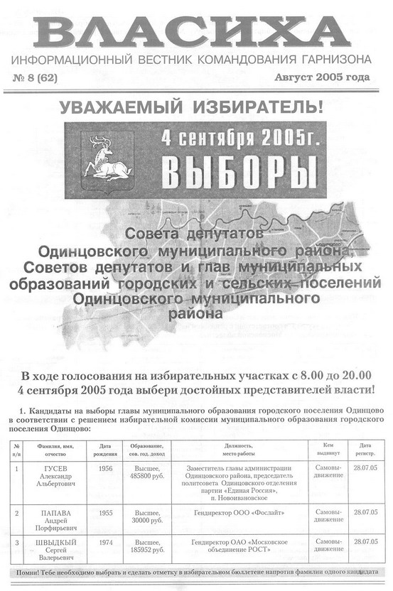
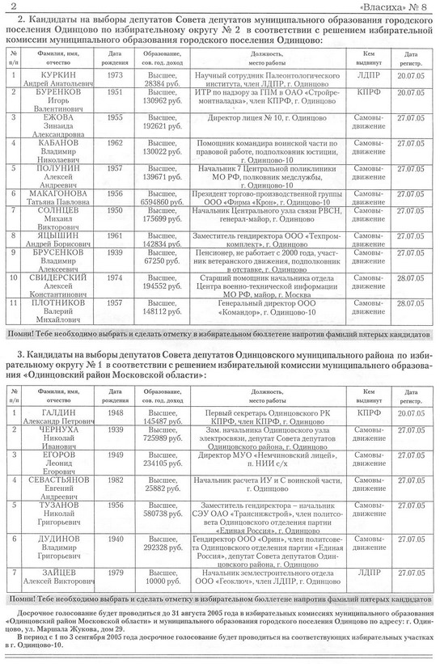

ПРОТОКОЛ
избирательной комиссии городского поселения Одинцово Одинцовского муниципального
района Московской области о результатах выборов по городскому поселению Одинцово по
пятимандатному избирательному округу № 2
Количество участковых избирательных комиссий — 11.
Количество поступивших протоколов участковых избирательных комиссий, на
> основании которых составлен протокол, — 11.
На основании данных протоколов участковых избирательных комиссий об итогах
> голосования после предварительной проверки правильности их составления
> избирательная комиссия муниципального образования путем суммирования содержащихся в них данных определила.
Число избирателей, внесенных в список избирателей
на момент окончания голосования, — 19910.
Число бюллетеней, полученных участковыми избирательными комиссиями, — 18849.
Число бюллетеней, выданных избирателям, проголосовавшим досрочно, — 169.
в том числе в помещении вышестоящей избирательной комиссии — 12.
Число бюллетеней, выданных избирателям в помещении для голосования в день
голосования, — 4193.
Число бюллетеней, выданных избирателям, проголосовавшим вне помещения для
> голосования в день голосования, — 62.
Число погашенных бюллетеней — 14437.
Число бюллетеней, содержащихся в переносных ящиках для голосования, — 62.
Число бюллетеней, содержащихся в стационарных ящиках для голосования, — 4353.
Число недействительных бюллетеней — 158.
Число действительных бюллетеней — 4257.
Фамилии, имена, отчества внесенных в бюллетень зарегистрированных кандидатов и
> число голосов избирателей, поданных за каждого из них.
БРУСЕНКОВ Владимир Алексеевич — 856.
БУРЕНКОВ Игорь Валентинович — 662.
ЕЖОВА Зинаида Александровна — 1431.
КУРКИН Андрей Анатольевич — 456.
МАКАГОНОВА Татьяна Павловна — 1462.
ПЛОТНИКОВ Валерий Михайлович — 776.
ПОЛУНИН Алексей Андреевич — 2224.
СВИДЕРСКИЙ Алексей Константинович — 542.
СОЛНЦЕВ Михаил Викторович — 2403.
ЯЦЫШИН Андрей Борисович — 1111.
Против всех кандидатов — 558.
Избирательная комиссия городского поселения Одинцово
Одинцовского муниципального района Московской области на основании статьи 64
Закона Московской области «О выборах депутатов, глав муниципальных образований и других признать.
СОЛНЦЕВА Михаила Викторовича, ПОЛУНИНА Алексея Андреевича,
МАКАГОНОВУ Татьяну Павловну,
ЕЖОВУ Зинаиду Александровну,
ЯЦЫШИНА Андрея Борисовича избранными в Совет депутатов городского поселения Одинцово Одинцовского
муниципального района Московской области по избирательному
округу № 2.
А.И. ГОЛУБЕВ,
председатель избирательной
>комиссии городского поселения Одинцово.
Т.В. ВЕКШИНА,
секретарь комиссии.

